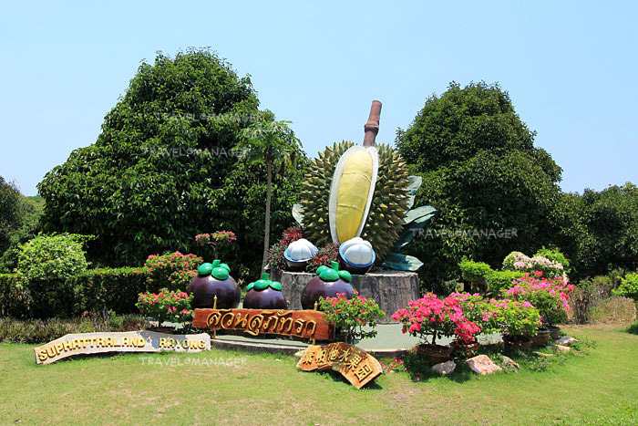
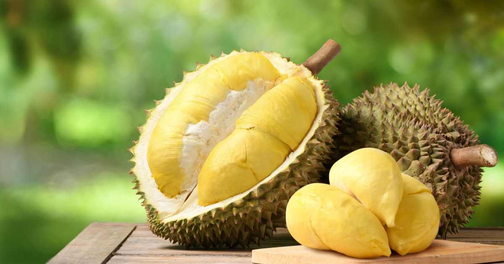
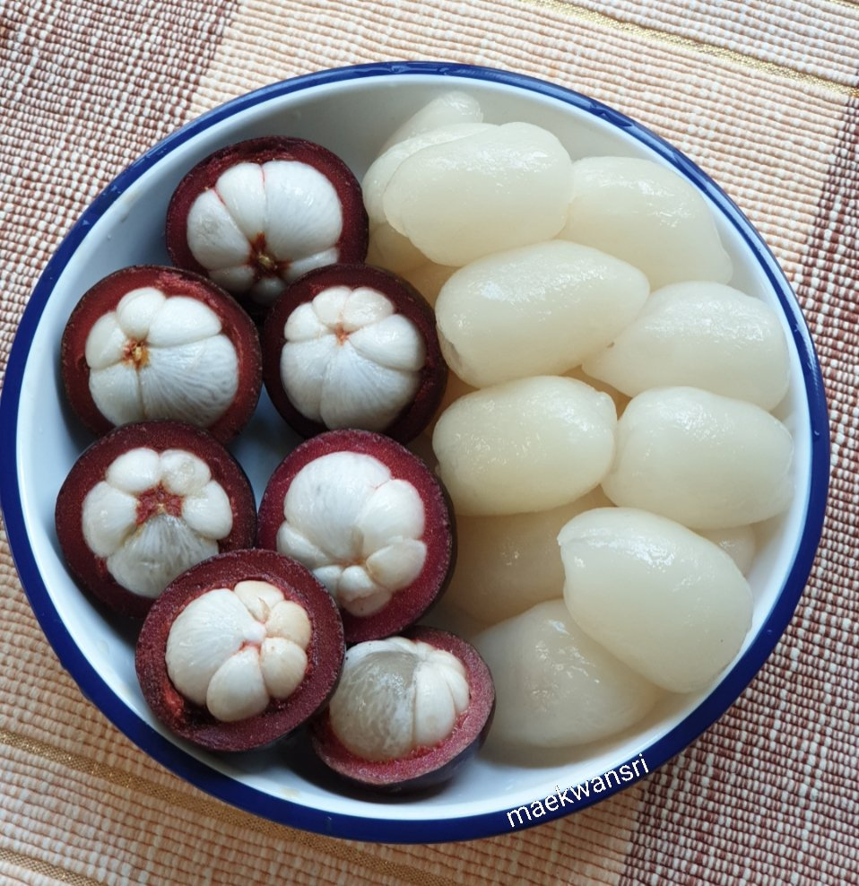
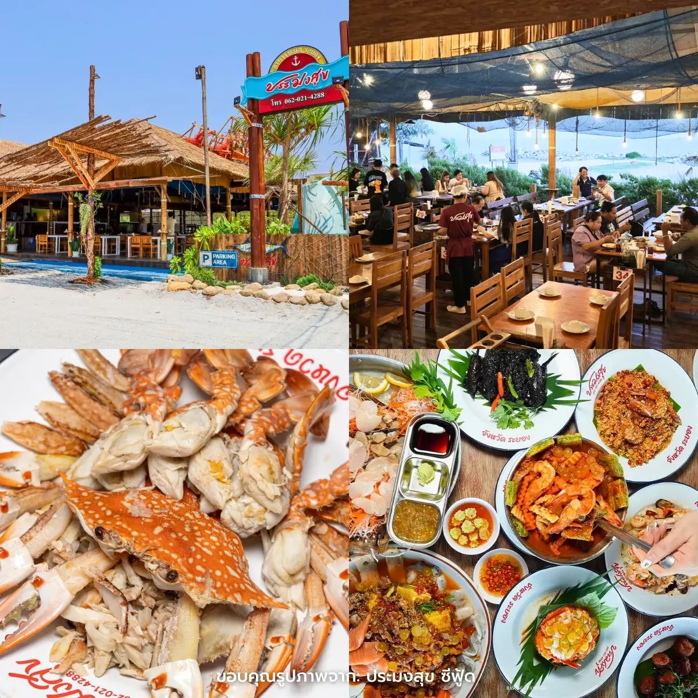
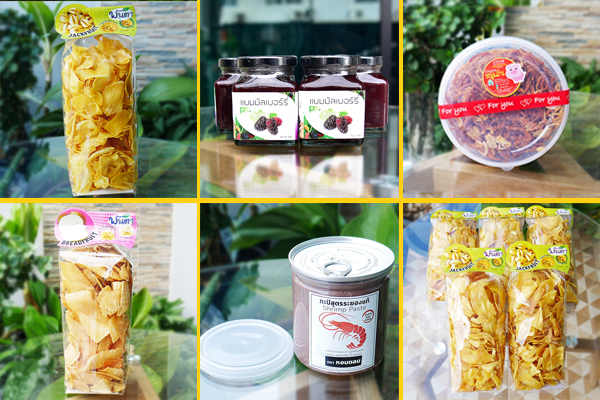

สวนผลไม้ระยอง

เรียนรู้จากผืนดินและผลผลิตท้องถิ่น ระยองเป็นจังหวัดที่มีพื้นที่เกษตรกรรมและมีชื่อเสียงด้านผลไม้ ในช่วงฤดูกาล ผลไม้หลายชนิด เช่น ทุเรียน มังคุด เงาะ และผลไม้อื่น ๆ จะออกผลและกลายเป็นหนึ่งในเสน่ห์ของการท่องเที่ยว สวนผลไม้จึงไม่ใช่เพียงพื้นที่ผลิตอาหาร แต่สามารถเป็นพื้นที่เรียนรู้สำหรับนักท่องเที่ยวได้ ผู้มาเยือนสามารถสังเกตต้นไม้ เรียนรู้วิธีการดูแลสวน และเห็นความสัมพันธ์ระหว่างฤดูกาลกับผลผลิต กิจกรรมในสวนยังช่วยให้ผู้เดินทางเข้าใจว่าอาหารที่รับประทานในชีวิตประจำวันมีที่มาและผ่านกระบวนการอย่างไร การท่องเที่ยวเชิงเกษตรจึงเป็นการเชื่อมผู้บริโภคกับเกษตรกร และช่วยสร้างความเข้าใจต่ออาชีพเกษตรกรรม นอกจากนี้ การซื้อผลผลิตจากสวนหรือชุมชนยังเป็นอีกวิธีหนึ่งในการสนับสนุนเศรษฐกิจท้องถิ่น
ทุเรียนระยอง

ราชาแห่งผลไม้และเรื่องราวจากสวน ทุเรียนเป็นหนึ่งในผลไม้ที่สร้างชื่อให้กับจังหวัดระยอง รสชาติ กลิ่น และเอกลักษณ์ของผลไม้ชนิดนี้ทำให้เป็นที่สนใจของนักท่องเที่ยวทั้งชาวไทยและต่างประเทศ เบื้องหลังทุเรียนหนึ่งผลคือกระบวนการดูแลสวนที่ต้องใช้เวลา ความรู้ และประสบการณ์ เกษตรกรต้องใส่ใจตั้งแต่การดูแลต้น การจัดการน้ำ การสังเกตสภาพอากาศ จนถึงการเลือกช่วงเวลาที่เหมาะสมในการเก็บเกี่ยว การท่องเที่ยวสวนทุเรียนจึงไม่ได้ให้เพียงประสบการณ์การชิม
มังคุดและเงาะ

สีสันแห่งฤดูกาลผลไม้ นอกจากทุเรียนแล้ว มังคุดและเงาะก็เป็นผลไม้ที่ช่วยสร้างสีสันให้กับฤดูกาลผลไม้ของระยอง ผลไม้แต่ละชนิดมีลักษณะ รสชาติ และวิธีการดูแลแตกต่างกัน การได้เห็นผลไม้จากต้นจริงทำให้นักท่องเที่ยวเข้าใจธรรมชาติและฤดูกาลมากขึ้น หากนำข้อมูลเหล่านี้ไปใส่ในเว็บไซต์ สามารถจัดเป็น Gallery ของผลไม้ และแบ่งเป็นหัวข้อ เช่น “รู้จักผลไม้” “จากสวนสู่โต๊ะอาหาร” และ “เที่ยวสวนอย่างไรให้เคารพเกษตรกร”
อาหารทะเลระยอง

รสชาติของเมืองชายฝั่ง อาหารทะเลเป็นหนึ่งในสิ่งที่ช่วยสะท้อนวิถีชีวิตของเมืองชายฝั่งอย่างระยอง ปลา กุ้ง ปลาหมึก ปู และผลิตภัณฑ์จากทะเลล้วนเกี่ยวข้องกับอาชีพของผู้คนและทรัพยากรในพื้นที่ การรับประทานอาหารทะเลจึงไม่ได้เป็นเพียงเรื่องของรสชาติ แต่ยังเชื่อมโยงกับเรื่องราวของชาวประมง ผู้ค้า และชุมชน นักท่องเที่ยวที่ได้ชิมอาหารท้องถิ่นจึงเหมือนได้สัมผัสอีกส่วนหนึ่งของวิถีชีวิตระยอง เว็บไซต์สามารถแบ่งหมวดอาหารเป็น “อาหารทะเลสด” “ของฝาก” และ “ผลิตภัณฑ์ชุมชน” เพื่อให้ผู้ใช้งานค้นหาข้อมูลได้ง่าย
ของฝากจากระยอง

ความทรงจำที่นำกลับบ้านได้ ของฝากเป็นส่วนหนึ่งของการเดินทางที่ช่วยให้ผู้มาเยือนได้เก็บความทรงจำกลับไปพร้อมกับสินค้าและผลิตภัณฑ์จากพื้นที่ ของฝากจากระยองมีทั้งผลไม้สด ผลิตภัณฑ์แปรรูปจากผลไม้ อาหารทะเลแห้ง และผลิตภัณฑ์จากชุมชน ของฝากแต่ละชนิดไม่ได้มีเพียงมูลค่าทางการค้า แต่ยังสะท้อนอาชีพและภูมิปัญญาของผู้ผลิต การเลือกซื้อสินค้าท้องถิ่นจึงเป็นอีกหนึ่งวิธีที่นักท่องเที่ยวสามารถสนับสนุนชุมชนและเศรษฐกิจในพื้นที่
back